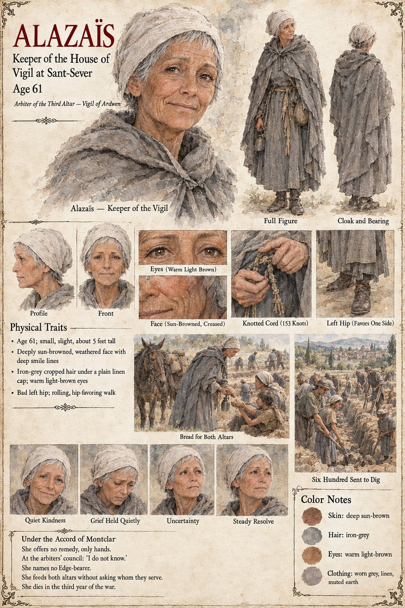

Alazaïs
Keeper of the House of Vigil at Sant-Sever · arbiter of the third altar, the Vigil of Ardwen · 61 years old, 64 at her death
A small, brown-faced woman of sixty-one with a bad hip, a worn grey cloak and a face that gives the impression of having been left out in the weather and improved by it, who arrives at the temple gate at dusk on the twenty-seventh of Garren by mule, tells the servant who cannot decide whether to bow that she has a perfectly good pair of legs somewhere beneath the saddle, and asks to be shown where she is to sleep. She keeps the House of Vigil at Sant-Sever, one of some forty in the realm, and she has no remedy, no lamp, no lens, no ram and no pyre; she has hands. She says so to the council as one reports the weather: the Vigil does not command the sky, but its ten houses within a day's walk have a great many hands, and digging is not a claim. She sends six hundred of them, goes up and down the trenches through fifteen days with a can of water and a heel of bread, and where someone has stopped, sits down beside him. In the evenings she runs through her fingers a knotted cord, one knot for every child she has baptized in forty years, a hundred and fifty-three of them, tied a little looser than a knot ought to be, so that a child who comes back might be found.
Asked on the first of Iverin, as arbiter of the third altar, which of the other two the realm owes, she says “I do not know,” and says it again more slowly for the clerk: that Ardwen answers the honest but never on command, and that she will not put a name on the table for the sake of a tenth of anyone's grain. Asked, in the Accord's own form, whether the Vigil will name a man for the Edge, she says that Ardwen does not send a man to answer a question she has not asked. That midnight she walks to the mill on her bad hip and tries, with a hundred and fourteen words of his language, to tell the stranger what he has signed, grain, tithe, a sack and a hand and a falling coin, Edge, war; he hears every word and understands none, and takes her Do not for do not be afraid. Every word was true, and it was a kind of silence. On the twentieth of Iverin she opens the doors at Sant-Sever without announcement and feeds the families of the dead, the levy's wives and children and the hungry of the Last Order out of a store scraped to the stone, never asking which altar they serve. She dies in the third year, at sixty-four, of a fever she takes from a child, having fed eleven thousand four hundred persons by Joan's count; her cord has a hundred and sixty-nine knots. What she told the young Keeper who asked whether the goddess had turned the Weather is carved above the door of the House in the next century, and the pilgrims who come to read it are disappointed. The manuscript gives her age, her hip, her face and her cloak; the sheet's iron-grey hair and warm light-brown eyes are its own.
“I do not know.”